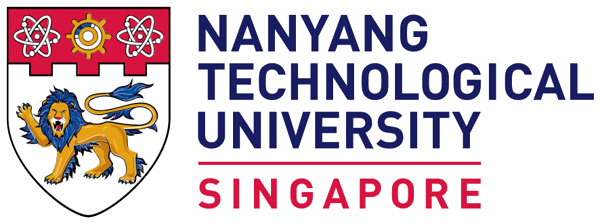

Look around. Tap a tile to open it.
I'm planning strategy at Consortium for Clinical Research and Innovation, Singapore.
Everyone defines marketing differently, but at its core, it’s about creating, communicating, and delivering value. That is how I plan across markets: start with what the audience needs, then say it clearly in the places they look, whether that is search, social or an AI answer.
Brands should be easy to find, by people and by AI. Data should shorten the road to a decision. Marketing has to earn trust before it asks for attention.
Career
Open to conversations on regional strategy, AI-native discovery and healthcare partnerships.
- Regional strategy
- AI-native discovery
- Healthcare partnerships
- Go-to-market
Revenue
SGD 200K+
every month at AsiaOne
Also worth a look
- Healthcare, life sciences and media
- 6+ years across 5 roles
- AI-native GEO/SEO and analytics
Website traffic
+40%

Two master's degrees and a bachelor's in business
Mentoring
NTU and SMU alumni mentor
Portfolio
See my work in full
Featured NTU alumnus · Master of Science in Information Studies, 2026
“IS allowed me to build on my business and marketing experience, developing deeper expertise in analytics and AI to take on new challenges.”
Advertising
Google Ads, Meta Ads, LinkedIn, TikTok
Analytics
GA4, BigQuery, Power BI, Tableau
Code
Python, R, SQL, JavaScript